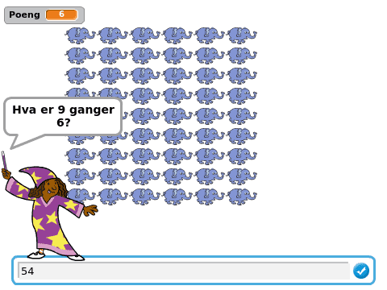
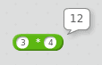
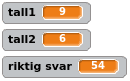
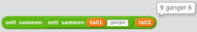
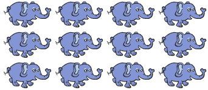

I dag skal vi lage et nyttig spill, nemlig et spill som hjelper oss å
lære andre ting. Vi skal få hjelp til å lære gangetabellen!

Steg 1: Læremesteren
Vi skal etterhvert lage et spill hvor vi får tilfeldige spørsmål fra
gangetabellen. Etter at vi svarer får vi vite om vi klarte å svare
riktig, og vi vil også få litt hjelp fra tegninger på skjermen. Men
først introduserer vi Læremester som skal hjelpe oss med
gangetabellen.
Sjekkliste
Start et nytt prosjekt og slett kattefiguren.
Legg til en ny figur ved å klikke på
. Velg
en av Wizard-figurene nesten nederst i Mennesker-kategorien.
Kall figuren Læremester.
Vi skal nå bruke tilfeldig tall-klosser slik at
Læremester kan spørre oss om tilfeldige gangestykker. Skriv dette
skriptet:
når grønt flagg klikkes
si (tilfeldig tall fra (2) til (10)) i (2) sekunder
si [ganger] i (2) sekunder
si (tilfeldig tall fra (2) til (10)) i (2) sekunder
Test prosjektet
Klikk på det grønne flagget.
Stiller Læremester deg et gangestykke?
Vi skal etterhvert se hvordan vi kan få Læremester til å si hele
teksten, i stedet for bare et ord om gangen.
Foreløpig kan du ikke svare Læremester (ihvertfall ikke med
datamaskinen, prøv gjerne å regne ut svaret og si det til dem som
sitter ved siden av deg).
Steg 2: Datamaskinen er en kalkulator
Du har kanskje ikke tenkt på det, men datamaskinen er en veldig flink
kalkulator. Det engelske ordet computer betyr til og med
regnemaskin. Vi skal nå se på hvordan vi får Scratch til å gange
sammen tall.
Sjekkliste
For å få Scratch til å regne bruker vi
Operatorer-klosser. Prøv for eksempel å dra
gangeklossen - med *-tegnet - til skriptområdet
på høyresiden. Skriv inn to tall og klikk på klossen. Scratch
regner da ut svaret på gangestykket.

Vi vil nå kombinere gangeklossen med tilfeldig tall-klossen, men for å få dette til trenger vi en
måte å huske de tilfeldige tallene: Variabler. Gå til
Data-kategorien og lag tre nye variabler:
tall1, tall2, og riktig svar. La de gjelde for alle figurer.
Skriv nå et helt nytt skript (la det ligge ved siden av det
skriptet du skrev i forrige steg).
når jeg mottar [Nytt spørsmål v]
sett [tall1 v] til (tilfeldig tall fra (2) til (10))
sett [tall2 v] til (tilfeldig tall fra (2) til (10))
sett [riktig svar v] til ((tall1) * (tall2))
Prøv å klikke på skriptet for å teste det (siden det ikke
starter med et grønt flagg kan vi ikke teste det på den vanlige
måten). Om du ser på variablene på scenen skal de endre seg hver
gang du klikker på skriptet. Er riktig svar rett?

Steg 3: Et skikkelig spørsmål
La oss se om vi kan sette sammen disse tallene til et skikkelig spørsmål.
Sjekkliste
Lag en ny variabel, spørsmål. Også denne skal gjelde
for alle figurer.
Klossen sett sammen kan brukes for å sette sammen
flere tall og ord. Vi skal nå bruke to sett sammen-klosser på denne måten:
sett sammen (sett sammen [] []) []
Dette gir oss plass til tre tall eller ord. Her kan vi putte inn
tall1, teksten ganger og
tall2. Pass på at du har
mellomrom før og etter ganger, det ser best ut da. Om du klikker på den første sett sammen-klossen vil du se hvordan den ferdige
teksten blir.

Legg denne klossen til nederst i Nytt spørsmål-skriptet:
når jeg mottar [Nytt spørsmål v]
sett [tall1 v] til (tilfeldig tall fra (2) til (10))
sett [tall2 v] til (tilfeldig tall fra (2) til (10))
sett [riktig svar v] til ((tall1) * (tall2))
sett [spørsmål v] til (sett sammen (sett sammen (tall1) [ ganger ]) (tall2))
Nå skal vi få Læremester til å stille oss spørsmålet vi har
satt sammen. Bytt ut det første skriptet (med det grønne
flagget) du skrev med dette:
når grønt flagg klikkes
send melding [Nytt spørsmål v] og vent
spør (spørsmål) og vent
Test prosjektet
Klikk på det grønne flagget.
Stiller Læremester deg et skikkelig spørsmål, for eksempel 9 ganger 6?
Er spørsmålene forskjellige hver gang?
Om du vil ha en liten utfordring kan du prøve å bruke flere sett sammen-klosser slik at spørsmålet blir for
eksempel Hva er 9 ganger 6?.
Steg 4: Er svaret riktig da?
Nå som vi kan svare på spørsmål vil vi også vite om vi svarer riktig.
Sjekkliste
Du ser kanskje at riktig svar vises på scenen? Da blir
det jo ikke særlig vanskelig! Ta bort alle variablene fra scenen ved
å gå til Data-kategorien og fjern haken foran hver variabel.
Nå skal vi bruke en hvis ellers-kloss for å gjøre
forskjellige ting ettersom du svarer riktig eller feil på
gangestykkene. Utvid det ene skriptet ditt på denne måten:
når grønt flagg klikkes
send melding [Nytt spørsmål v] og vent
spør (spørsmål) og vent
hvis <(svar) = (riktig svar)>
si [Ja, så flink du er!] i (2) sekunder
ellers
si [Nei, det ble visst feil.] i (2) sekunder
slutt
Klossen svar husker svaret du skriver når
Læremester spør om gangestykket.
Test prosjektet
Klikk på det grønne flagget.
Hva skjer om du svarer riktig?
Klikk det grønne flagget igjen for å få en ny oppgave. Hva skjer om
du ikke svarer riktig?
Steg 5: Flere gangestykker
I stedet for å måtte trykke det grønne flagget hele tiden, kan vi be
Læremester om å stille oss flere spørsmål!
Sjekkliste
Vi bruker først en gjenta-kloss slik at vi kan få
flere oppgaver. Legg merke til at vi også sender en Nytt spørsmål-melding hvis svaret er riktig. Hvis svaret
er feil stiller vi det samme spørsmålet en gang til.
når grønt flagg klikkes
send melding [Nytt spørsmål v] og vent
gjenta (10) ganger
spør (spørsmål) og vent
hvis <(svar) = (riktig svar)>
si [Ja, så flink du er!] i (2) sekunder
send melding [Nytt spørsmål v] og vent
ellers
si [Nei, det ble visst feil.] i (2) sekunder
slutt
slutt
Vi kan også telle poeng hver gang du svarer riktig. For å gjøre
dette trenger vi en ny variabel, Poeng. Denne skal
gjelde for alle figurer, og denne lar vi være på scenen slik at vi
ser den.
Legg til en kloss i skriptet som setter Poeng til 0
rett etter at det grønne flagget klikkes.
Legg også til en kloss som endrer Poeng med 1 hvis
svar er riktig.
Test prosjektet
Klikk på det grønne flagget.
Får du flere oppgaver uten at du må trykke på det grønne flagget?
Får du et poeng hver gang du svarer riktig?
Klarer du 10 poeng?
Steg 6: Litt hjelp kanskje ...
Til slutt skal vi se på hvordan Læremester kan gi oss litt hjelp med
gangestykkene. En måte å tenke på gangestykker er at vi har mange ting
som vi plasserer i et rutenett. For eksempel kan vi tenke på 3
ganger 4 som 3 rader med 4 elefanter i hver som dette:

Hvis vi ikke husker hvor mye 3 ganger 4 er, kan vi da telle elefanter
og finne ut at svaret er 12.
Sjekkliste
Legg til en ny figur som vi kan få litt hjelp fra. Du kan velge
hvilken figur du vil, men vi har brukt Dyr/Elephant. Gi figuren
navnet Hjelper.
For å tegne et rutenett med Hjelpere bruker vi to
gjenta-klosser i tillegg til stemple avtrykk som tegner Hjelperne på skjermen. Skriv dette
skriptet på Hjelper-figuren:
når jeg mottar [Tegn hjelper v]
slett
sett størrelse til (20)%
vis
sett y til (140)
gjenta (tall1) ganger
sett x til (-140)
gjenta (tall2) ganger
stemple avtrykk
endre x med (40)
slutt
endre y med (-25)
slutt
skjul
Om du har brukt en annen figur som Hjelper kan det hende du må
bruke noen andre tall i dette skriptet. Prøv i så fall først å
forandre på sett størrelse til 20%-klossen.
Nå skal vi tegne dette rutenettet hver gang vi lager et nytt
spørsmål. Klikk på Læremester, og legg til en kloss nederst i
Nytt spørsmål-skriptet:
når jeg mottar [Nytt spørsmål v]
sett [tall1 v] til (tilfeldig tall fra (2) til (10))
sett [tall2 v] til (tilfeldig tall fra (2) til (10))
sett [riktig svar v] til ((tall1) * (tall2))
sett [spørsmål v] til (sett sammen (sett sammen (tall1) [ ganger ]) (tall2))
send melding [Tegn hjelper v]
Test prosjektet
Klikk på det grønne flagget.
Tegnes det et rutenett av hjelpere til hver oppgave?
Flere utfordringer
Du kan forandre hvor vanskelige gangestykkene er ved å forandre
tallene i tilfeldig tall-klossene.
Om du gir Hjelper flere drakter kan du bruke en neste drakt-kloss i Tegn hjelper-skriptet for å få litt
variasjon i hjelperfigurene. Om du gjør dette er det enklest om
draktene er omtrent like store.
Kanskje Læremester kan gi litt mer hjelp når man svarer feil?
Klarer du få henne til å si Nei, det riktige svaret er større
eller Nei, det riktige svaret er mindre?
Læremester kan mye rart! Kanskje hun kan lære bort andre ting enn
gangestykker?
Forbedre denne siden
Funnet en feil? Kunne noe vært bedre? Hvis ja, vennligst gi oss tilbakemelding ved å lage en sak på Github eller fiks feilen selv om du kan. Vi er takknemlige for enhver tilbakemelding!

 . Velg
en av Wizard-figurene nesten nederst i
. Velg
en av Wizard-figurene nesten nederst i